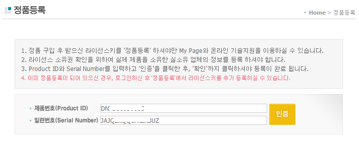
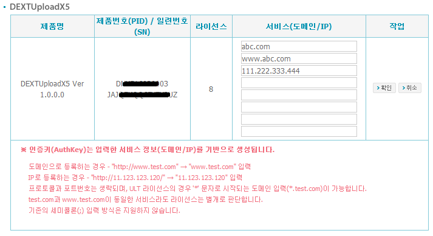
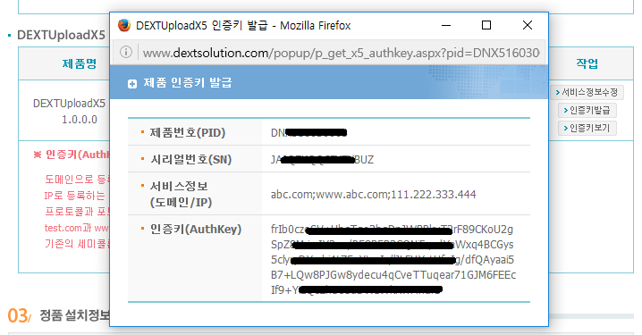
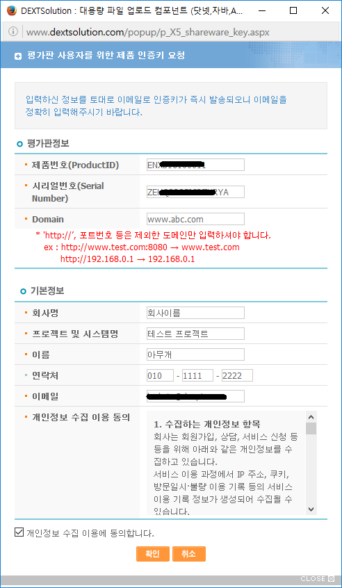

도메인 라이선스
DEXTUploadX5는 도메인(Domain) 라이선스로 판매됩니다.
localhost 혹은 127.0.0.1로 하는 서비스는 라이선스 제한 없이 사용할 수 있습니다.
HD 응용프로그램을 사용하려면 HD 응용프로그램을 사용할 수 있는 라이선스를 구매해야 합니다. 기존 라이선스로 HD 응용프로그램을 사용할 수 없으며, MT(유지보수계약) 연장만으로 HD 응용프로그램 사용이 가능한 라이선스로 변경이 되지 않습니다.
- 정식 라이선스 사용하기.
-
정식 라이선스를 구매하면, PID(제품번호)와 SN(시리얼번호)이 주어집니다.
DEXTUploadX5의 PID는 "DNX5"로 시작합니다.
먼저 덱스트솔루션사이트(http://www.dextsolution.com)에 로그인을 한 후, 주어진 PID와 SN으로 정품 등록을 합니다.

인증키를 발급 받기 위해서 "MYPAGE" > "설치정보 변경" 페이지로 이동합니다.
DEXTUploadX5 항목에서 정품으로 등록된 라이선스를 찾아 서비스 정보(도메인 또는 IP)를 수정합니다.

- 서비스 정보의 이해
-
업로드 혹은 다운로드할 주소(URL)의 호스트(host) 부분을 의미하며, 스키마(http/https) 및 포트 번호를 제외합니다.
업로드할 주소가 "http://host1.abc.com:8080/service/path?query=string" 라면 host1.abc.com이 서비스 정보입니다.
필요에 따라 "https://123.45.67.122:443/service/path?query=string" 처럼 IP(123.45.67.122) 문자열을 서비스 정보로 입력해야 할 때도 있습니다. (정해진 도메인이 없다면)
www.abc.com과 abc.com이 동일한 서비스라 하더라도, 제품에서는 다른 서비스로 인식합니다.
localhost, 127.0.0.1은 입력하지 않더라도 서비스가 가능합니다.
만약 입력할 서비스 정보가 없다면 127.0.0.1을 입력하더라도 상관은 없습니다.
서비스 정보가 변경되었다면 인증키를 재발급해야 합니다.
인증키 버튼을 사용하여 정식 라이선스에 대한 인증키(AuthKey)를 발급합니다. 이때 화면에 보이는 인증키 문자열을 복사해둡니다.

복사한 인증키 문자열은 제품 리소스 중, dextuploadx5-configuration.js 파일을 열어 authkey 속성 값으로 설정하면 됩니다.
// dextuploadx5-configuraiton.js 파일 내용입니다. win.dextuploadx5Configuration = { // 인증키 문자열을 authkey 속성 값으로 설정하세요. authkey: "jn+xziPdVh6f5KN17uFH...생략...WiXAyO2FdI9r5XGfwxQ=", ... }; - 평가판으로 사용하기.
-
DEXTUploadX5는 개발자 라이선스가 따로 제공되지 않습니다.
그러므로 구매한 라이선스는 정식 서비스에서만 사용을 해야합니다. 대신 개발 편의성을 제공하고자 30일간 사용이 가능한 평가판 라이선스가 제공이 됩니다.
평가판 라이선스는 덱스트솔루션 사이트(http://www.dextsolution.com)에서 평가판을 다운로드 받을 때 함께 제공됩니다.
사이트에서 "평가판" 페이지로 이동하고, DEXTUploadX5 항목의 'down' 버튼을 클릭하여, 다운로드 창을 띄웁니다.
DEXTUploadX5 제품을 다운로드하기 위한 정보를 입력하고 '확인' 버튼을 클릭하면, 제품이 다운로드되며, 이와 함께 e-mail로 DEXTUploadX5 평가판 인증키가 발송됩니다.

정식 라이선스처럼 인증키 문자열은 제품 리소스 중, dextuploadx5-configuration.js 파일을 열어 authkey 속성 값으로 설정하면 됩니다.
평가판 라이선스는 30일간 사용이 가능합니다.
만료된 평가판 라이선스는 재활용이 되지 않습니다.
평가판 라이선스를 사용할 때에는 HD 응용프로그램도 이용할 수 있습니다.(2.0.0.0 버전 이후)
평가판을 계속 사용하려면, 다시 평가판을 다운로드 받으면 함께 발행되는 새 인증키를 적용해야 합니다. (인증키만 교체)
- 서버를 이관하거나 서버 정보가 변경된 경우
-
DEXTUploadX5는 인증 검사를 할 때, 서비스 정보를 기준으로 삼습니다.
그러므로 파일을 업로드하거나 혹은 다운로드하는 주소의 호스트(= 서비스 정보)가 변경되지 않는다면 인증키를 재발급 받을 필요가 없습니다.
서비스 정보가 변경됐다면, 덱스트솔루션 사이트(http://www.dextsolution.com) 로그인 후, "MYPAGE" > "설치정보 변경" 페이지로 이동합니다.
DEXTUploadX5 항목에서 해당 라이선스를 찾아 변경된 서비스 정보(도메인 또는 IP)를 수정합니다.
인증키 버튼을 사용하여 정식 라이선스에 대한 인증키(AuthKey)를 재발급하고, dextuploadx5-configuration.js 파일을 열어 authkey 속성 값을 재설정하면 됩니다.
- 라이선스 주의 사항
-
(주)데브피아는 라이선스 구매 시점의 구매/사용처 고객 정보와 PID(제품번호), SN(시리얼번호), 라이선스 종류에 대해서만 관리를 합니다.
- 라이선스 설치 정보 변경(서비스 정보 수정) 작업과, 인증키를 재발급 받는 과정은 고객님께서 직접 관리해야 하는 사항입니다.